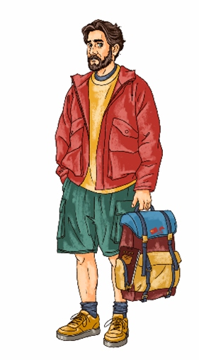
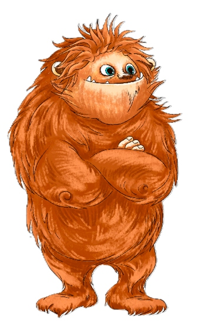
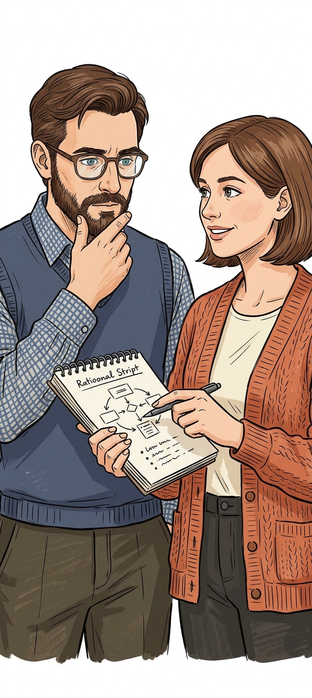
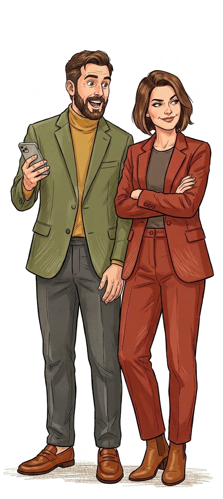
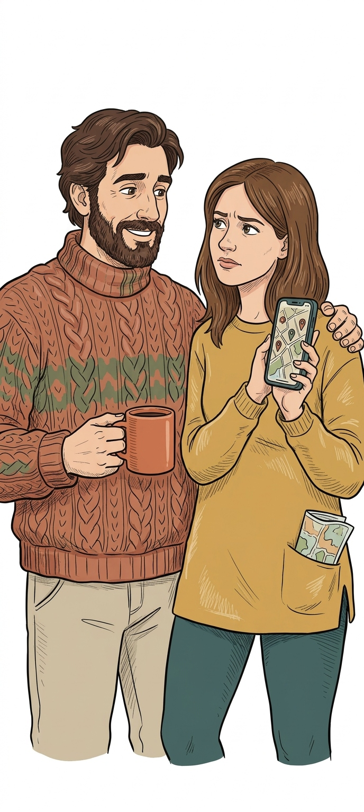

Геймифицированный
онлайн-тренажер
«Китайский с 0»
Цифровой образовательный продукт для освоения базовых навыков китайского языка с нуля. Онлайн, самостоятельное обучение в индивидуальном темпе с использованием игровых механик и микролернинга.

Аркадий
Криптозоолог,
главный герой

Ежэнь
Мистический персонаж,
маскот тренажера
Легенда и цель тренажера
Легенда
Криптозоолог Аркадий работает в лаборатории Терра Инкогнита. Он собирается в экспедицию в поисках Ежэня. Узнав, что Китай ввел безвизовый режим для граждан РФ, Аркадий принял решение незамедлительно отправиться в путь.
Цель продукта
Создать цифровой адаптивный тренажер для взрослых, который позволит освоить и применить в реальных ситуациях базовые фразы китайского языка, постепенно увеличивая сложность через механизмы двойного кодирования, персонализированного повторения и симуляции диалогов.
Конкурентная среда
Ключевые игроки
Преимущества рынка
- Низкий порог входа
- Элементы геймификации
- Короткие сессии
- Хорошая база для старта и заучивания лексики
Незакрытые зоны (GAPS)
- Слабая подготовка к реальному HSK (материал разрознен)
- Нет четкой траектории от нуля до результата
- Отсутствие связи с реальными практическими задачами взрослого ученика
Вывод для продукта
- Выигрышное позиционирование на стыке геймификации и системного академического подхода
- Микрообучение (10-15 мин), но с жесткой привязкой к стандартам HSK1 и прозрачным прогрессом
Целевая аудитория
Понять потребности пользователей, их барьеры и конкурентную среду для запуска востребованного MVP продукта.
Занятые взрослые от 22 до 45 лет, совмещающие учебу с работой
Нехватка времени, страх перегруза, быстрая потеря мотивации при отсутствии результатов
Микрообучение (сессии по 10-15 минут), четкая структура курса, видимый прогресс на каждом шаге
Портрет ЦА

Тип 1: Рациональный
Интеллектуал, понимает ценность языка, но нет срочности. Не будет учиться сам.

Тип 2: Амбициозный
Язык как социальный лифт. Готов платить, любит соревноваться.

Тип 3: Осторожный
Рационален, боится ошибок. Избегает любой соревновательности.
Карта стейкхолдеров
Распределение заинтересованных сторон по уровню влияния и поддержки проекта.
Научная база продукта
Проектные решения опираются на теории обучения и модели педагогического дизайна.
Конструктивизм
Основа подхода: ученик выстраивает знание через активное взаимодействие со средой
Бихевиоризм
Инструментальная роль: drill-метод, мгновенная обратная связь
Теория когнитивной нагрузки
Контроль нагрузки на рабочую память
Теория мультимедийного обучения
Мультимодальное представление материала
Теория двойного кодирования
Вербальный + визуальный каналы памяти
Теория самодетерминации
Автономия, компетентность, связанность
Геймификация
Прогресс, уровни, награды, мотивационный дизайн
Скоро появится...
Структура первой локации
Подробная структура входного экрана и первой локации тренажера с описанием шагов, типов контента и обратной связи.
| Блок | Шаг | Название | Тип контента | Что делает ученик | Обратная связь |
|---|---|---|---|---|---|
| ВХОД | Экран 1 | Стартовая страница | Заставка + авторизация | Ввод имени для рейтинга; нажатие «Начать путешествие» | Анимация: Аркадий получает билет в Китай |
| ВХОД | Экран 2 | Главная страница - карта городов | Навигация | Выбор локации (первая открыта, остальные закрыты) | Плашка «Аркадий ждет на границе», подсвечена локация 1 |
| ЛОКАЦИЯ 1 | Комикс-вход | Сюжетная заставка | Только сюжет | Просмотр комикса: пограничник задает вопрос разными тонами | Мотивационная реплика Аркадия о важности тонов |
| ЛОКАЦИЯ 1 / Ход 1 | Шаг 1.1 | Система пиньинь и структура слога | Только теория | Карточки: схема слога, таблица инициалей, таблица финалей; нажать - услышать | Карточка отмечается «прочитано», прогресс-бар заполняется |
| ЛОКАЦИЯ 1 / Ход 1 | Шаг 1.2 | Соотнесение слогов и аудио | Задание | Соединить 6 слогов с их аудиозаписями | Зеленый / красный цвет + повтор правильного аудио |
| ЛОКАЦИЯ 1 / Ход 2 | Шаг 2.1 | Четыре тона - ввод теории | Теория + заметка | Карточка с графиком тонов, аудиопримеры; лингвокультурная заметка | Карточка отмечается «прочитано» |
| ЛОКАЦИЯ 1 / Ход 2 | Шаг 2.2 | Различение тонов на слух | Задание | Услышать слог - выбрать тон (графика + цифра); 8 слогов, нарастающая сложность | Мини-анимация правильного графика тона после каждого ответа |
| ЛОКАЦИЯ 1 / Ход 2 | Шаг 2.3 | Выбор правильного произношения | Задание | Увидеть слог с тоновым знаком - выбрать верную аудиозапись из трех | Указание, в чем ошибка: тон, инициаль или финаль |
| ЛОКАЦИЯ 1 / Ход 3 | Шаг 3.1 | Числительные 1-10 в сюжете | Сюжет + задание | Аркадий ищет номер очереди: прослушать объявление, выбрать число из трех | Мгновенное подтверждение / разбор ошибки с контекстом ситуации |
15 учебно-игровых модулей
Каждый модуль привязан к городу Китая и отражает логику постепенного освоения языка по таксономии Блума.
Граница, фонетика
Система пиньинь, инициали, финали, четыре тона, числительные 1-10
Иероглифика, Суйфэньхэ
Базовые черты, порядок черт, простые иероглифы и числительные
Знакомство и семья, Чанчунь
Лексика семьи, возраста, внешности; фразы знакомства
Жилье и город, Шэньян
Лексика помещений, мебели, предлогов места
Учеба и работа, Пекин
Лексика профессий, мест, действий; описание маршрута
Время и расписание, Сиань
Лексика времени, дат, дней недели; выражения времени
Распорядок дня, Урумчи
Последовательность повседневных действий в диалоге
Транспорт и сравнение, Чэнду
Виды транспорта, способы передвижения, конструкции сравнения
Покупки, Шанхай
Лексика товаров, денег, числительных; диалог покупки
Кафе и оплата, Сучжоу/Ханчжоу
Лексика еды, напитков, реплики официанта; заказ и оплата
Ориентирование, Чунцин
Направления, стороны света; инструкции движения
Хобби, Гуанчжоу
Лексика хобби и интересов; речь о досуге
Погода, Гонконг
Лексика погоды и сезонов; прогноз погоды
Природа и путь, Хайнань
Лексика природы и транспорта; ориентация на местности
Здоровье и привычки, Куньмин
Лексика здоровья и привычек; советы и рекомендации
Дорожная карта
Два этапа работ: от анализа и проектирования до запуска MVP и масштабирования.

Анализ и проектирование
Исследование ЦА, формирование брифа, UX-прототипы, анализ технических ограничений, разработка сценариев обучения.
Разработка и тестирование
Программная реализация упражнений, дизайн интерфейса, интеграция в LMS ВШЭ, альфа- и бета-версии.
Метрики успеха
Completion >70%, Retention 7-day >40%. Пользователь может пройти модуль от начала до конца без критических багов.